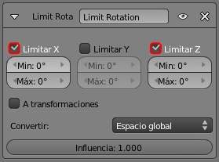
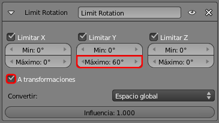
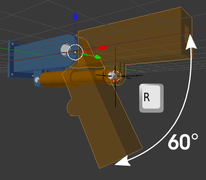

Brazo móvil
Igualamos Locales con Globales
Como es norma, no comenzamos el trabajo de configuración de las restricciones sin igualar los ejes Locales de todos los objetos con los ejes Globales.
Como es una edición que se puede hacer de forma masiva, seleccionamos los cuatro objetos (brazo_inmovil, brazo_movil, piston_grueso y piston_fino) y usamos Objeto/Aplicar/Rotación.
Seleccionamos brazo_movil y le añadimos una Restricción  de tipo Limitar rotación.
de tipo Limitar rotación.
Por la posición del brazo parece que lo evidente es limitar en X y en Z; sólo queremos que rote en Y.

Si ahora rotamos ("R") vemos que no es necesario hacer "RY" para restringir el giro. Pero no nos conformamos sólo con eso. El brazo debe tener unos límites en ese eje Y.
Al activar la limitación en Y (además de la X y la Z que ya están)...
...habremos dejado al brazo sin posibilidad de maniobra. Pero vamos a introducir el valor Máximo: 60. Es muy importante activar la opción A transformaciones. Esta opción nos permite despreocuparnos en el momento de la animación.
Con esto restringimos todos los giros ("R") del brazo excepto al recorrido en Y desde 0º hasta 60º. Al llegar a esos puntos el brazo se niega a moverse más allá.
